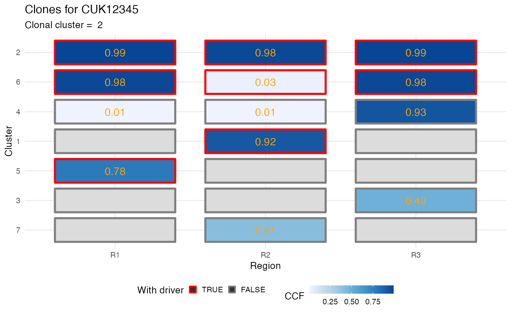

plot_CCF_clusters.RdThis function creates a ggplot-style
heatmap of the input CCF cluster of each clone in the data.
The heatmap is annotated for the drivers status of each
clone (with/ without driver). The CCF values are used to
colour the heatmap (`NA` values are in light gray).
plot_CCF_clusters(x, ...)
| x | A |
|---|---|
| ... | Extra parameters, not used. |
| patient | A patient id. |
A ggplot plot.
data(ctree_input) x = ctrees( ctree_input$CCF_clusters, ctree_input$drivers, ctree_input$samples, ctree_input$patient, ctree_input$sspace.cutoff, ctree_input$n.sampling, ctree_input$store.max )#> [ ctree ~ generate clone trees for CUK12345 ] #> Sampler : 10000 (cutoff), 5000 (sampling), 100 (max store) #> # A tibble: 7 x 7 #> cluster nMuts is.driver is.clonal R1 R2 R3 #> <chr> <int> <lgl> <lgl> <dbl> <dbl> <dbl> #> 1 1 72 TRUE FALSE 0 0.92 0 #> 2 2 69 TRUE TRUE 0.99 0.98 0.99 #> 3 3 48 FALSE FALSE 0 0 0.49 #> 4 4 29 FALSE FALSE 0.01 0.01 0.93 #> 5 5 24 TRUE FALSE 0.78 0 0 #> 6 6 23 TRUE FALSE 0.98 0.03 0.98 #> 7 7 15 FALSE FALSE 0 0.41 0 #> #> ✔ Region R1 ~ #CCF clusters > 1%: 3 #> ✔ Region R2 ~ #CCF clusters > 1%: 4 #> ✔ Region R3 ~ #CCF clusters > 1%: 4 #> ✔ Trees per region 1, 3, 1 #> ✔ Hashed trees 5 #> ✔ Structures 3 - search is exahustive #> ✔ Pigeonhole Principle #> ✔ Ranking trees #> ✔ Trees with non-zero sscore 3 storing 3 #>plot_CCF_clusters(x[[1]])#> Warning: Removed 8 rows containing missing values (geom_text).